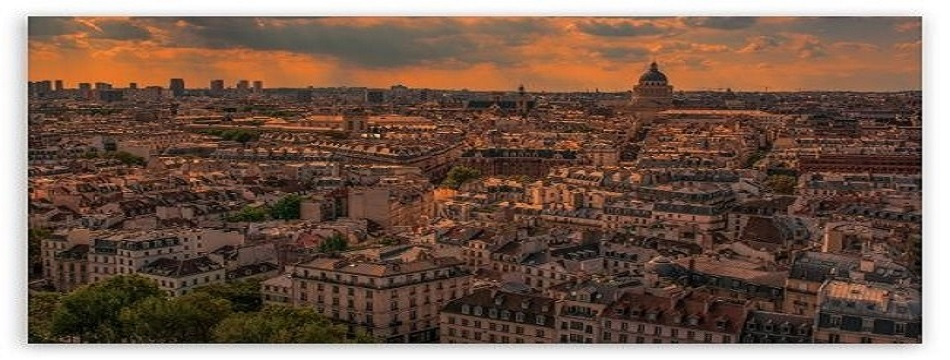
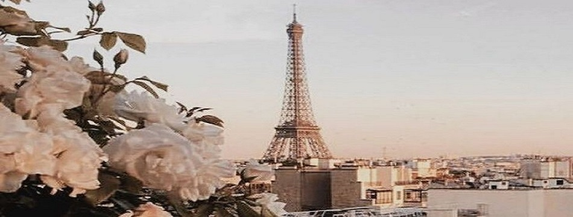
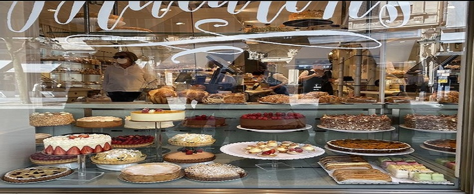

Discover the romance and charm of the most romantic city in the world.
Paris, the capital city of France, is known for its rich history and cultural heritage. From the iconic Eiffel Tower to the historic Notre-Dame Cathedral, every corner of the city tells a story.
Explore the romantic streets of Montmartre, visit the Louvre Museum, and take a cruise along the Seine River. Paris offers a plethora of attractions that captivate the hearts of visitors.
Indulge in the exquisite flavors of Parisian cuisine. From croissants and baguettes to escargot and coq au vin, the city's food scene is a delight for every food lover.
